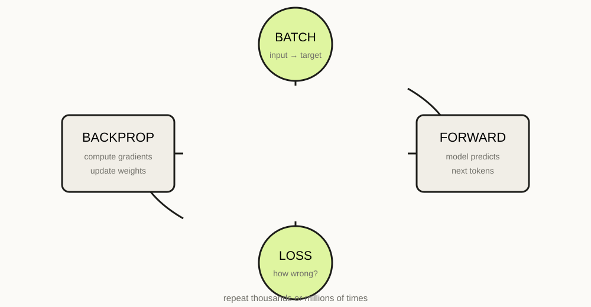

LLM FROM SCRATCH · 07 · TRAINING · 22 MIN READ
Training an LLM is a giant loop of tiny corrections.
The model predicts. A loss measures the error. Backpropagation computes gradients. An optimizer changes the parameters. Repeat.

The objective
For a causal language model, each position predicts the next token. Given target token y, the model produces a distribution p(y|context). Cross-entropy loss penalizes the probability assigned to the correct target.
loss = F.cross_entropy(
logits.view(B * T, V),
targets.view(B * T)
)Flattening combines batch and time positions so PyTorch sees a conventional classification problem with V classes.
Forward pass
logits = model(x)
loss = F.cross_entropy(
logits.reshape(-1, vocab_size),
y.reshape(-1)
)At this moment the model has produced predictions but has not learned from them yet.
Backpropagation
optimizer.zero_grad(set_to_none=True)
loss.backward()
optimizer.step()loss.backward() applies the chain rule through the entire computation graph. Every parameter receives a gradient describing how a small change would affect the loss.
AdamW
Adam-family optimizers maintain running estimates of gradient statistics to adapt the size of parameter updates. AdamW separates weight decay from the adaptive gradient update, which makes its regularization behavior easier to reason about.
optimizer = torch.optim.AdamW(
model.parameters(),
lr=3e-4,
weight_decay=0.1
)The exact learning rate is not universal. Tiny models, datasets and hardware need different settings. Treat hyperparameters as experimental variables, not sacred constants.
A minimal training loop
for step in range(max_steps):
xb, yb = get_batch("train")
logits = model(xb)
loss = F.cross_entropy(
logits.view(-1, vocab_size),
yb.view(-1)
)
optimizer.zero_grad(set_to_none=True)
loss.backward()
optimizer.step()
if step % 100 == 0:
print(step, loss.item())Train and validation loss
Never look only at training loss. Hold out a validation split. If training loss continues falling while validation loss stops improving or rises, the model is fitting the training data without improving generalization.
@torch.no_grad()
def estimate_loss():
model.eval()
# sample several batches from train and val
# average their losses
model.train()Perplexity
Language-model quality is often summarized with perplexity, which is related to the exponent of average negative log-likelihood. Lower is better under the same tokenization and evaluation setup. It is useful, but it is not a complete measure of usefulness or reasoning ability.
Learning-rate schedules
It can be useful to warm up the learning rate and then decay it. A simple educational experiment is to compare constant learning rate with cosine decay. The important lesson is not the schedule itself; it is learning to inspect how optimization dynamics change.
Explain the chain: logits → cross-entropy → scalar loss → gradients → optimizer update. If you can trace one parameter through that loop, the training process is no longer a black box.
Gradient clipping
Some training runs produce unusually large gradients. Clipping limits their norm:
torch.nn.utils.clip_grad_norm_(model.parameters(), 1.0)This is a safety valve, not a substitute for diagnosing an unstable configuration.
Next
A good optimizer cannot rescue bad batches. The next lesson builds the dataset pipeline and explains context windows, batching and memory.